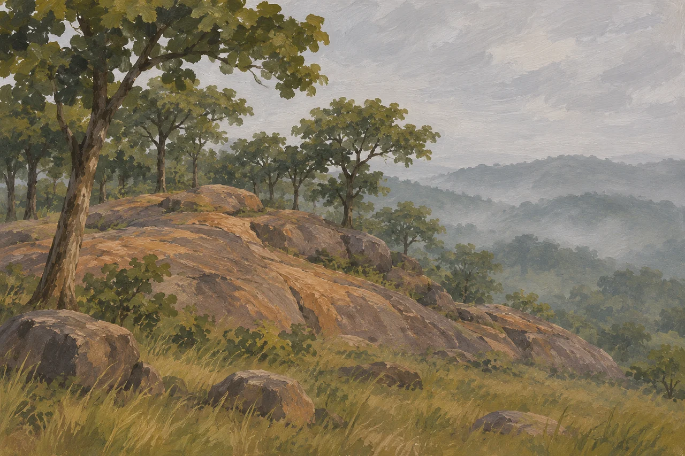

.JPG){kind=link}
The land and the people
South of Ranchi, the Chotanagpur plateau opens into wooded ridges, cultivated hollows and settlements spaced between fields and forest. In the late nineteenth century the places most closely associated with Birsa’s movement included Khunti and Tamar, with connections into Singhbhum. The plateau was home to several distinct peoples. The Mundas, who speak Mundari, had their own institutions and histories. The Oraons, Kharias, Santals and Hos had histories and institutions of their own. The word Adivasi can express a shared political identity across these differences. It helps to begin here with the particular history of the Munda villages where Birsa’s movement took shape.
In accounts of Mundari village organisation, a village headman could be called a munda, a manki could have responsibilities spanning several villages, and a pahan was responsible for aspects of village ritual. The names describe roles, and their arrangements could vary. The village was also a place of work. Cultivation, access to forest produce and grazing could sustain the same household in different seasons. A claim over a field therefore sat alongside claims about who could use the surrounding land, who owed rent and who could decide what happened when the harvest failed. Roy, chs. II and VI Chandra, pp. 6–14

What khuntkatti meant
Khuntkatti associated rights in land with the lineages of people who had cleared it and founded a settlement. Cultivating households could hold particular fields while founding families retained wider claims rooted in ancestry and village membership. Rights differed between members of those families and people who settled there later. Translating the arrangement as private ownership would miss some of those relationships. Describing every village as an egalitarian commons would miss the differences between households. In practice, the system gave people a way to explain both their rights and their obligations to others.
Land alienation had a history before British rule. Colonial revenue and judicial administration gave additional force to rent claims and to some of the intermediaries who collected them. Depending on the place, villagers dealt with landlords, leaseholders and moneylenders. A debt could deepen dependence. Rising demands for rent and beth begari, compulsory service, strained the ability of a family to work its own fields. Changes in forest administration put some customary uses under further pressure. Diku could name an outsider viewed as exploitative. In this history the word is closely tied to the experience of extraction and should be read in the context of who was using it and why.
Before Birsa came to prominence, Munda leaders known as Sardars had already organised an extended campaign for land rights. They petitioned, brought cases and sometimes approached missionaries for help. These attempts required money, travel and people willing to learn how an unfamiliar administration worked. Some Christian Adivasis were active in the Sardari Larai. Their participation matters because it shows how religious affiliation could change without making someone any less involved in the defence of Munda land. Birsa entered a struggle already shaped by decades of work and frustration. Das Gupta Bara, pp. 11–14
Childhood and education
Ulihatu, in present-day Khunti district, is the birthplace commemorated by the Government of India. The Dictionary of Martyrs gives 15 November 1875 and names his parents as Sugana and Karmi Munda. He grew up in a farming family. Scholarly accounts differ on the exact details of his birth: Uday Chandra notes dates ranging from 1872 to 1875 and rival claims for Ulihatu and Chalkad. The dates shown here follow the public commemorative chronology. On that reckoning, he was twenty-four when he died. Dictionary, p. 77 Chandra, pp. 20–21
Birsa studied at the German Lutheran mission school at Chaibasa. Mission education brought him into contact with Christian teachings and a setting in which education and the politics of land could meet. Chandra describes how hopes that missionaries might help recover lost land gave way to disputes between mission leaders and the Sardars. Birsa left the school around 1890–91. Accounts give slightly different years, and the changing affiliations of individual family members resist a single story of the whole household. Chandra, pp. 21–22 Dictionary, p. 77
After Chaibasa, Birsa spent time with Anand Panre in the Bandgaon area and encountered Vaishnava practices. The dictionary also describes his involvement in taking a petition over forest dues to Chaibasa. These episodes give a sense of the choices open to a young man in this world: school, work in another household, contact with religious teachers and participation in village demands. Their significance lies partly in how closely those experiences overlapped. The institutions that taught him, employed him and fielded the claims of cultivators were all part of the same changing region. Chandra, pp. 21–22 Dictionary, p. 77
Becoming Dharti Aba
By 1895 people were gathering around Birsa at Chalkad. Reports of healing and his authority as a teacher drew followers. Dharti Aba, commonly rendered Father of the Earth, and Bhagwan Birsa express the reverence many followers accorded him. The historian can document that people sought his help and used such titles. Accounts of visions and miraculous cures tell us what followers or observers understood to have happened. They belong to the history of his authority and belief. Bara, pp. 11–13 Rycroft
Birsa’s teachings called for changes in everyday conduct and worship. Accounts associate his teaching with prayer, abstaining from intoxicants and rejecting certain sacrifices. The details reach us through witnesses with different interests, including missionaries, government officials and followers. In the religious community remembered as Birsait or Birsa dharam, experience of Christian missions and Vaishnava practices met a Munda social and moral world. The movement developed a religious identity of its own and some followers maintained it after his death. Its history cannot be read from any one of its influences. Das Gupta Ranjan, pp. 9–10 and ch. 5
Birsa gave questions of religious authority a public consequence. If a community could decide how to live and worship, it could also ask who had the right to collect rent or demand labour. The balance between reform, healing and political action changed as more people joined. Some had been part of the Sardari Larai. Others came to him through ties of kinship, belief or locality. In 1895 the authorities imprisoned him. After his release in 1897, meetings and organising resumed. The earlier arrest helps explain why some historians begin their chronology of the movement in 1895. Dictionary, p. 77 Chandra, pp. 21–26
The Ulgulan, 1899–1900
Ulgulan is commonly translated as the Great Tumult or uprising. Here 1899–1900 refers to the concentrated armed phase. The movement that made it possible began earlier. For cultivators who saw rent rise or a customary use of the forest curtailed, an argument about land touched their ability to remain in a village. For former petitioners, the failure to secure relief raised another question: how far could the institutions that upheld these demands be relied on to put them right? Birsa’s appeal to Munda rule gave that question a language of self-government. Das Gupta Bara, pp. 12–15
From meetings to open resistance
Organising intensified in 1899. Joseph Bara discusses testimony about a meeting at Dumbari Buru in October in which complaints about landlords and leaseholders were central. Testimony given at a colonial trial is useful for tracing what was at stake. Its wording passed through the circumstances and procedures of a criminal prosecution. People who helped bring neighbours together rarely had the means to leave their own written accounts. The Dictionary of Martyrs credits a woman named Sali with mobilising women. Anjana Singh follows a different trail through judicial proceedings and commemoration. Her study describes Maki Munda’s part in the resistance at Itkadih and her imprisonment, while other women in the same household are recorded without their given names. Read together, the two accounts show how much of the work and cost of the movement can disappear when the record follows police operations or the best-known leaders. Bara, pp. 13–14 Dictionary, p. 77 Anjana Singh, pp. 45, 49–51
In late December 1899 attacks were reported in several localities, including attacks on mission sites and Christian households. In early January the conflict reached police stations. Chandra’s reading of official records places an attack on the Khunti police station on 6 January 1900 and notes that a Munda constable was killed. People on different sides of the conflict could belong to the same community. Bara emphasises the challenge to colonial power and the language of self-rule. Chandra draws attention to earlier political negotiations and conflicts within villages, including rivalries over authority and religious allegiance. Reading the two together helps explain why an uprising that is remembered as a struggle for freedom also had painful consequences within the region. Chandra, pp. 23–27 Bara, pp. 13–17
Dombari Buru and Sail Rakab

On 9 January 1900 colonial forces fired on a gathering of Birsa’s followers at Sail Rakab hill, identified in the Dictionary of Martyrs as near Dombari. Dombari Buru, also written Dumbari Buru, is the name under which the episode is widely commemorated. Using both names makes it possible to follow the military account and the memorial tradition without treating every account as a description of an identical spot. The assault broke up the gathering. Birsa escaped the immediate operation.
The firing was followed by searches, arrests, surrenders and trials. The colonial government had the power to disperse gatherings and prosecute individual followers. Once sentences were imposed, families faced the consequences locally. The uprising ceased to operate as an open armed movement, while questions about land tenure and forced labour passed into inquiries, settlement work and law. The political defeat and the later changes in land administration belong in the same story. Das Gupta Roy, ch. V
Arrest and final days
After the January suppression, the search continued into the forests of Singhbhum. The modern Dictionary of Martyrs puts the arrest at Jamkopai forest in the Chakradharpur area, saying Birsa was caught asleep on 3 March 1900. Anjana Singh gives 3 February and also describes a capture while sleeping, with women of Birsa’s household present. The Indian Express likewise gives 3 February and places the arrest more broadly in the forests of Porahat. The accounts differ on the month, and their detail about the arrest and those present is uneven. The timeline gives early 1900 and retains the disagreement here. Dictionary, p. 77 Indian Express Anjana Singh, p. 45
The legacy of Ulgulan
Survey and settlement work in the following years made officials record categories of tenure that earlier administration had failed to recognise adequately. The Chota Nagpur Tenancy Act of 1908 consolidated rules governing landlords, tenants and rents. Its sections 7 and 8 define related but distinct categories: raiyats with khunt-katti rights and Mundari khunt-kattidars. Chapter XVIII sets out special provisions for the latter. Section 240 places substantial restrictions on transfer while specifying exceptions and conditions. These distinctions matter because a statute can recognise particular forms of customary tenure without converting every village claim into the same legal right. Act, §§ 7–8 and 239–250 Das Gupta
Founding lineages, cultivation and local obligations
Officials classified tenures and recorded rights
Defined categories and restricted specified transfers
Birsa was dead by the time the legislature enacted the law. His movement, decades of earlier agrarian agitation and administrative inquiries formed the history behind these reforms. The legal recognition was consequential, but its reach depended on whose rights were recorded, the category assigned and what a claimant could enforce. Questions about access to land and forest, the power of local institutions and the meaning of consent have continued to outlive any particular settlement. Act Bara, pp. 18–20 Ranjan, introduction
In the twentieth century Jaipal Singh Munda and the Adivasi movement for Jharkhand gave Birsa’s memory new political visibility. Bara traces how their publications and meetings brought the Ulgulan into debates over representation and regional self-government. Jharkhand became a separate state on , under the Bihar Reorganisation Act. Statehood emerged from many decades of organising and coalitions. For people invoking Birsa within that movement, the name connected political representation to an older demand for authority over land and community affairs. Bara, pp. 4–6 and 18–20 Bihar Reorganisation Act, § 3
Birsa Munda in historical memory
Much of the earliest surviving print record was made by people with the power to photograph, classify or prosecute. Songs and accounts passed through Munda families preserve other perspectives and have histories of their own. The linguists Ram Dayal Munda and Norman H. Zide documented songs about Birsa and his movement. Bara uses one to show how singers placed him in a landscape of courts, places of worship and remembered centres of authority. A song gives a way to hear what later singers found worth carrying forward. Its places and images should be read in that genre, with care about turning any line into a transcript of 1899. Archival catalogue Bara, pp. 13–15
Rahul Ranjan follows Birsa across statues, memorial sites and stone inscriptions. The image a community raises, the figure a state chooses to honour and the person evoked in a song can put different parts of the past in view. A statue may fix an image of the rebel; a site of remembrance can point back to a place where families lost people or where a community continues to assemble. Education circulates these different views too, through textbooks and institutions bearing his name, including Birsa Agricultural University in Ranchi. The devotional title Bhagwan remains meaningful to followers; its appearance on a government institution records another context in which that title now circulates. Ranjan, introduction Birsa Agricultural University
Mahasweta Devi’s Bengali novel Aranyer Adhikar brought the struggle into literary memory. A novel can ask readers to imagine a past that administrative files rarely convey in the words of the people they describe. It belongs alongside historical research as a form of interpretation. The portrait at the head of this article raises a related issue: its early print provenance is traceable, while the circumstances of the sitting have been debated. A caption that tells readers where an image was published offers firmer ground than a confident reconstruction of the moment the shutter closed. Bara, pp. 8–9 Rycroft
Janjatiya Gaurav Divas · 15 November
In 2021 the Union Cabinet designated 15 November as an annual day of recognition for Adivasi contributions to India’s freedom struggle. The first observance included the opening of the Bhagwan Birsa Munda Memorial Park and Freedom Fighter Museum at Ranchi. The commemoration shares a date with Birsa’s recognised birth anniversary and Jharkhand’s formation. These anniversaries bring a national audience to the story. The particular histories of Munda communities and their accounts of land, religion and authority are where a reader can begin to understand it. Cabinet decision Ministry of Tribal Affairs
Editorial reflection
What stays with me is the distance between cultivating a field and being able to decide its future. A family can spend generations making a place habitable and defending it, then discover that another institution has recorded its interests in words it barely recognises. Birsa’s story makes that distance visible. It also asks what dignity requires of people who inherit the power to decide which versions of the past are remembered. Listening begins with asking who can speak about a place, in what language, and with what authority.
Historical timeline
Open a milestone for context and a link to the relevant chapter.
Birth anniversary
The commemorated date and birthplace are 15 November and Ulihatu. Birth details vary across accounts. Read the chapter
1890s Reform and mobilisation
Followers gather around Birsa. He is jailed in 1895 and released in 1897. Read the chapter
Open uprising
Reports of attacks reach the authorities as the armed phase of the Ulgulan begins. Read the chapter
Firing at Sail Rakab
Colonial forces fire on a gathering near Dombari. The exact toll is disputed. Read the chapter
Early 1900 Arrest in Singhbhum
Accounts give 3 February and 3 March. Birsa is imprisoned in Ranchi. Read the chapter
Death in custody
Birsa dies in Ranchi jail. The reported illness and the subsequent dispute are treated separately. Read the chapter
Chota Nagpur Tenancy Act
The Act defines several tenure categories and sets special conditions for Mundari khunt-kattidari tenancies. Read the chapter
Jharkhand becomes a state
The Bihar Reorganisation Act takes effect on the appointed day. Read the chapter
First Janjatiya Gaurav Divas
The first national observance follows the Union Cabinet’s decision earlier that month. Read the chapter
Glossary
- Ulgulan
- Great Tumult or uprising. The name for the movement associated with Birsa, sometimes used specifically for its armed phase.
- Khuntkatti
- A customary tenure linking claims to land to founding lineages and the clearance of land for settlement and cultivation.
- Diku
- An outsider, especially one perceived as exploitative in the context of these disputes.
- Begar
- Compulsory labour or service, often exacted without payment.
- Birsait
- A follower of Birsa’s religious movement, also used for the community formed around Birsa dharam.
- Dharti Aba
- Father of the Earth, an honorific used for Birsa.
Sources and further reading
- Joseph Bara, “Birsa Munda and the Nation,” Journal of Adivasi and Indigenous Studies 12(2), 2022, pp. 1–23.
- Uday Chandra, “Flaming Fields and Forest Fires,” Indian Economic and Social History Review 53(1), 2016, pp. 1–30.
- Ministry of Culture and Indian Council of Historical Research, Dictionary of Martyrs: India’s Freedom Struggle, vol. 4, “Birsa Munda,” p. 77.
- Sarat Chandra Roy, The Mundas and Their Country, 1912. Early ethnography and historical account.
- Sanjukta Das Gupta, “Munda Rebellion,” Banglapedia, Asiatic Society of Bangladesh.
- Anjana Singh, “Birsa’s Ulgulan: Unsung Women Warriors of a Popular Revolt,” Journal of Adivasi and Indigenous Studies 14(1), 2024, pp. 39–55.
- Rahul Ranjan, The Political Life of Memory: Birsa Munda in Contemporary India, Cambridge University Press. Open introduction.
- Rahul Ranjan, book excerpt on Dombari Buru and Sail Rakab, including colonial correspondence and interviews, published by The Quint.
- Daniel J. Rycroft, “Capturing Birsa Munda: The Virtuality of a Colonial-era Photograph,” Indian Folklore Research Journal 1(4), 2004.
- The Indian Express, “Amid debate over Adivasi identity, recalling the icon who helped define it: Birsa Munda,” June 2026.
- India Code, The Chota Nagpur Tenancy Act, 1908, §§ 7–8 and chapter XVIII.
- India Code, Bihar Reorganisation Act, 2000, § 3 and appointed-day notification.
- Norman H. Zide and Ram Dayal Munda, “Revolutionary Birsa and the Songs Related to Him” (1969), University of Birmingham archival catalogue.
- District Ranchi, Birsa Agricultural University.
- Press Information Bureau, Union Cabinet decision on Janjatiya Gaurav Divas, 10 November 2021.
- Ministry of Tribal Affairs, “India celebrates Janjatiya Gaurav Divas,” 16 November 2021.
- K. S. Singh, Birsa Munda and His Movement, 1874–1901, Oxford University Press, 1983. NCERT catalogue. Full text was unavailable for direct consultation.
About and corrections
This is an independent, non-commercial educational article from Sanatana Series. For a factual correction, please share the passage and supporting source through the existing Sanatana Series project on GitHub. Sanatana Series on GitHub
Last updated